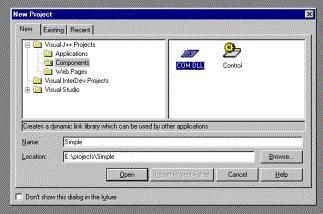
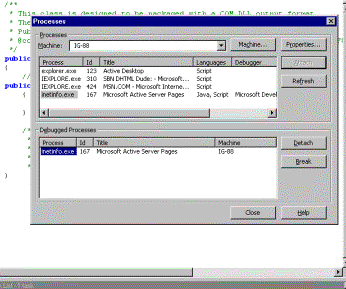

|
| ||
|
| ||
Tom Moran
Microsoft Corporation
September 1, 1998
The following article was originally published in the Site Builder Network Magazine "Servin' It Up" column (now MSDN Online Voices "Servin' It Up" column). The questions and answers that appeared with it can be found in Ask Tom: Server Q & A.
I try to make this column fun. After all, if I don't have fun writing it, and you don't have fun reading it, why bother? So, when trying to come up with a topic for this month, I thought, "What could possibly be more fun than debugging server-side objects written in Java?" I haven't, however, done any customer analysis on that assertion, so I could just be shooting in the dark -- maybe you like pool, or baseball, or something else entirely.
The first step is to create a simple object and an Active Server Pages technology page (.asp) to use that object. To follow along with this, you'll need Visual J++™ 6.0, Visual InterDev™ 6.0, and Windows NT® 4.0/Internet Information Server (IIS). Your goal is to create a very simple Java COM object that lives on your server (on your dev machine) and an ASP page that talks to that component. Then you will be able to set a breakpoint in your Java object and have it actually break into the debugger.
First, bring up Visual J++ 6.0, and create a new project. Select Components, and COM DLL as the project type, as I've shown you below. I called my project Simple.

In the Project Explorer, I renamed the default Class1.java to Simple.Java simply by right-clicking on the name, and then double-clicked to bring up the source window. In the source window, I changed the class name to Simple, which Visual J++ 6.0 was nice enough to tell me to do. Then I simply added the following lines of code after the TODO marker:
public String GetString()
{
return "I love SBN";
}
Next I pressed the build button, and, approximately three seconds later, was finished with a debug build. Now I'm done with that piece. "What? No type libraries, or javareg, or file copies?" you ask? Visual J++ 6.0 takes care of all that for you when you select COM DLL as your project type. It generated the typelib, and, by checking in OLE View, I can see it has been registered properly. Visual J++ 6.0 is so cool…
Note that if you want to change your object and rebuild it, you will most likely need to stop and restart IIS. You can do that easily by opening up a console window and using the following commands:
C:\ >Net stop iisadmin /y
Followed by:
C:\>Net start w3svc
I created a batch file to do this, since I knew I would be doing it a few times. The issue is that the Java VM basically holds on to your COM DLL; you have to go through this in order to force it to unload -- so it can be replaced by your newer version.
Now that the object was created, I needed to create an ASP page that uses it. In the same project, I simply selected File/New File, selected Visual InterDev, and selected ASP Page as the file type. Normally I would create a new Visual InterDev project to do this, but I chose not to in this case to simplify things as much as possible. This added an ASP page to my project; now all I had to do was add four lines of ASP code and I was done:
<%
Set x=Server.CreateObject("Simple.Simple")
Response.Write(x.GetString())
%>
I then saved the file as test.asp in my c:\inetpub\wwwroot directory, my default Web directory. Again, this is not really the best way to do this -- but I am not creating a production system, just illustrating a concept. I also have to fit all this in about three pages. Test it to ensure it works by bringing up the ASP page. If it doesn't work, be sure you have the correct object name, which would be <project>.<class>; you can verify that by looking in OLE View under Java Classes. OLE View is a tool that ships with Visual J++ 6.0. I just opened Internet Explorer and typed in my URL: HTTP://TIE/test.asp. Sure enough, my page said, "I love SBN."
Now that we had a Java COM object and an ASP page to use it, all we had to do is debug. We already ensured that we were building for debug, and that set up most things we needed. If you've done this before in Visual J++ 6.0, you'll notice it is now much easier. All you have to do at this point is attach your Java code to a process for debugging. Select Debug/Processes from the main menu, select the inetinfo process (active server pages) and press the Attach button. Your screen should look something like this:

Now add a breakpoint on the line return "I love SBN"; -- in your Simple.java source file. In Visual J++ 6.0, you simply need to click on the left-hand side of the line to create a breakpoint. Clicking again would remove it. Bring up your Internet Explorer window, and hit refresh. Visual J++ should catch this and bring up the debug environment -- you are now in your Java object. Most of the defaults are set correctly to allow you to do this. You may want to check under Tools/Options/Debugger to what the various options available are. Write some code, set some breakpoints, and have fun.
One additional note -- make sure you install the ASP2FIX program; it contains some vital fixes. It comes with Visual Studio, and the location is in your readme file.
Next month, now that we have a foundation, we'll do something a little more interesting with the same object. We could try to get cross-language debugging working, add data access to the component, or most exciting of all, move the object to a different server and try to set up remote debugging. You tell me what you want to do, and we'll do it.
So how did I figure all this out? Am I simply a genius who knows everything? Of course not -- all the really smart people are creating new products or waiting for you to stump them with a support question. Like you, I have to research much of this stuff, and thanks to my support background, I'm pretty good at that part. Each month, I'll write up a short list of the steps I took to find the answers to that month's problems. That should help you find more answers on your own.
Tom Moran is a program manager with Microsoft Developer Support and spends a lot of time hanging out with the MSDN Online Web Workshop folks. Outside of work, he practices kenpo (although sometimes necessary at work), tries out original recipes on his family (Lisa, Aidan, and Sydney), leads white-water trips, or studies tax law (boring, but true).
Did you find this material useful? Gripes? Compliments? Suggestions for other articles? Write us!
© 1999 Microsoft Corporation. All rights reserved. Terms of use.